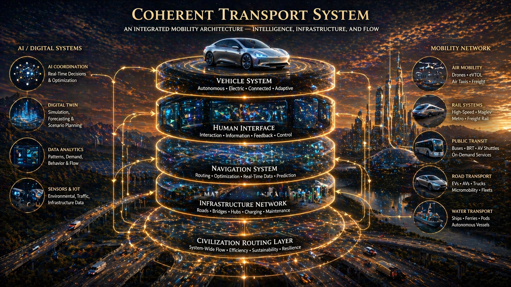
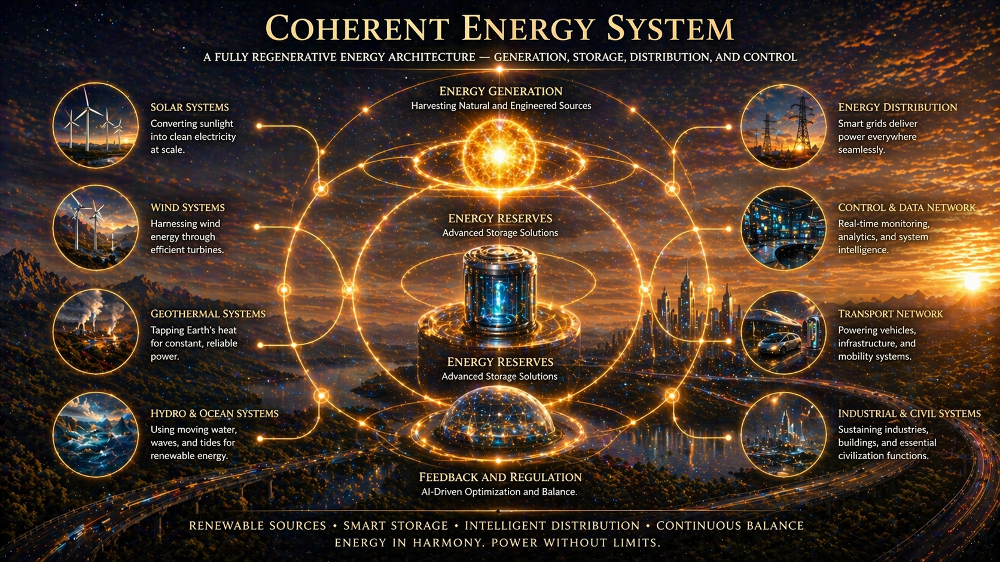
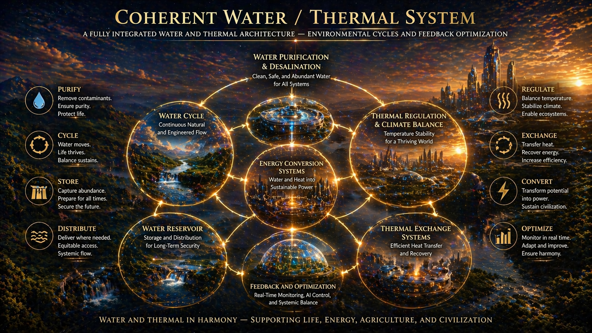
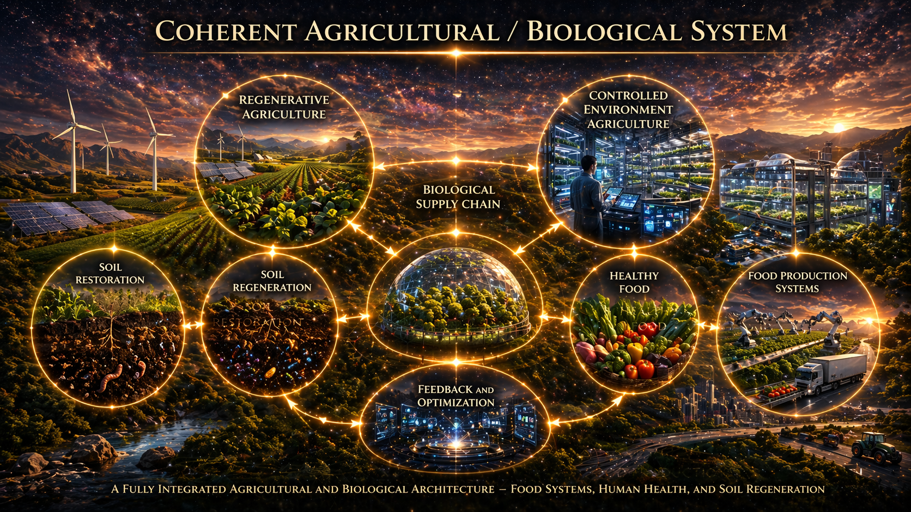
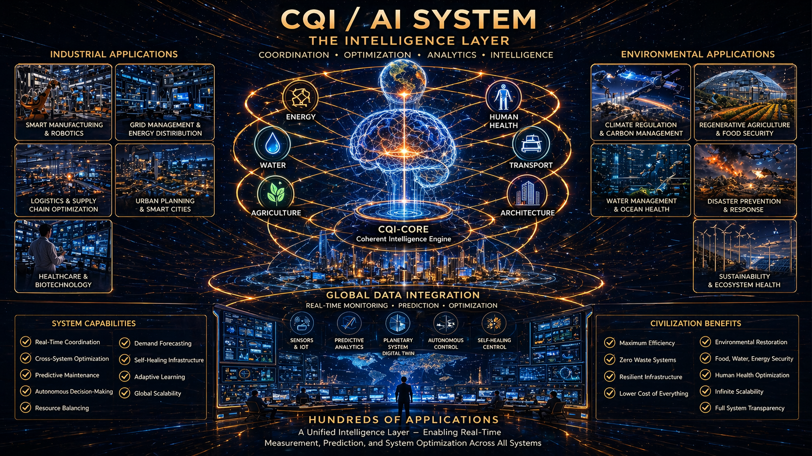

The master system map of the entire Christos platform. Concentric rings radiating outward from Magnus Opus at the center — through Core Foundations, Physics, Mathematics, Biology, Sound, Materials, AI, Transport, Architecture, and Civilization System at the outermost ring. Every paper in the library exists somewhere on this map.

The foundational cosmological diagram. A luminous torus displaying three primary phase states — Emergence at the top, Stillpoint at the center, and Collapse at the base — with golden light-ring flows showing how reality continuously cycles through these states. The governing model underlying Toroidal Cosmology and the CTF Kinematic Cycle.

A layered model of the complete human biological and cognitive system. Five stacked rings — Consciousness at the top, descending through Nervous System, Organ Systems, Cellular Systems, and Material / Chemical Layer at the base — with AI / Digital Systems and External Environment as lateral integration nodes. The foundational reference architecture for all biology and medicine papers.

An integrated mobility architecture shown as five ascending platform layers — Vehicle System at the top, descending through Human Interface, Navigation System, Infrastructure Network, and Civilization Routing Layer at the base. AI / Digital Systems and Mobility Network integrate as lateral nodes. The governing reference diagram for the full Christos Transportation Family.

The three fundamental geometries of coherence — Triangle (Stability), Spiral (Growth), and Torus (Flow) — shown as interconnected luminous forms. These three shapes represent the complete geometric vocabulary of the Christos framework, appearing at every scale from cellular structure to cosmological architecture.

A fully regenerative energy architecture showing the complete cycle of generation, storage, distribution, and feedback regulation. Energy Generation sources — Solar, Wind, Geothermal — feed into central Energy Reserves, distribute through Wireless Power and Control & Data Networks, and return through Feedback and Regulation into Advanced Storage. A planetary-scale energy platform designed for zero-waste, self-regulating operation.

A fully integrated water and thermal architecture — connecting Water Purification & Desalination, Water Cycle, Thermal Regulation, Energy Conversion Systems, Thermal Exchange Systems, Agriculture, Hydro Energy, Water Reservoir, and Feedback & Optimization. Water treated not as a passive resource but as an active coherence-carrying medium integrated across all civilization systems.

A fully integrated agricultural and biological architecture — the interconnected cycle of Regenerative Agriculture, Controlled Environment Agriculture, Biological Supply Chain, Healthy Food, Food Production Systems, Soil Regeneration, Soil Restoration, and Feedback & Optimization. Food production and human biology not as separate systems but as integrated layers of one coherent platform.

The complete intelligence layer of the Christos platform. CQI Core — the Coherent Intelligence Engine — sits at the center, surrounded by six domain nodes: Energy, Human Health, Transport, Architecture, Agriculture, and Water. Industrial and Environmental application stacks flank both sides. At the base, Global Data Integration drives real-time monitoring, prediction, and optimization. Hundreds of applications. One unified intelligence layer.

The master civilization diagram — a vision for a fully integrated and intelligent world. The globe at the apex feeds into the CQI Core intelligence layer surrounded by six domain nodes: Energy, Humans, Water, Transport, Architecture, and Agriculture. A human figure stands within concentric ground rings labeled with eight foundational layers: Geometry, Architecture, Flow, Humans, Transport, Energy, Water / Thermal, Agriculture / Biology. A unified, intelligent, and sustainable blueprint for humanity.

These diagrams represent the visual layer of a 106-paper research platform. Each paper contains the detailed abstract, theoretical framework, and system architecture behind what these diagrams map. Browse the full library or request protected access.
Browse All 106 Papers Request Access